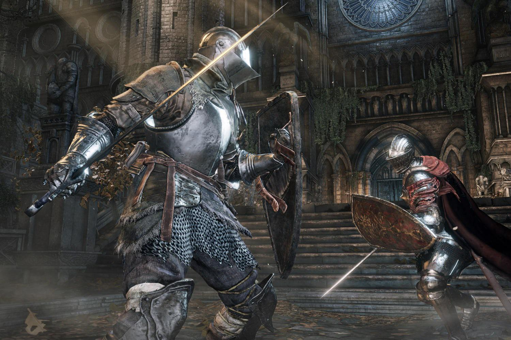
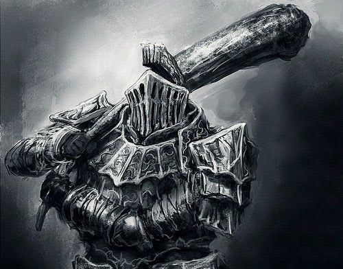
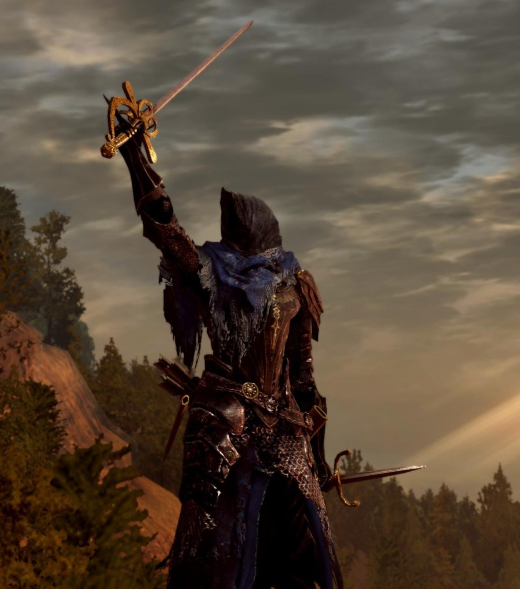
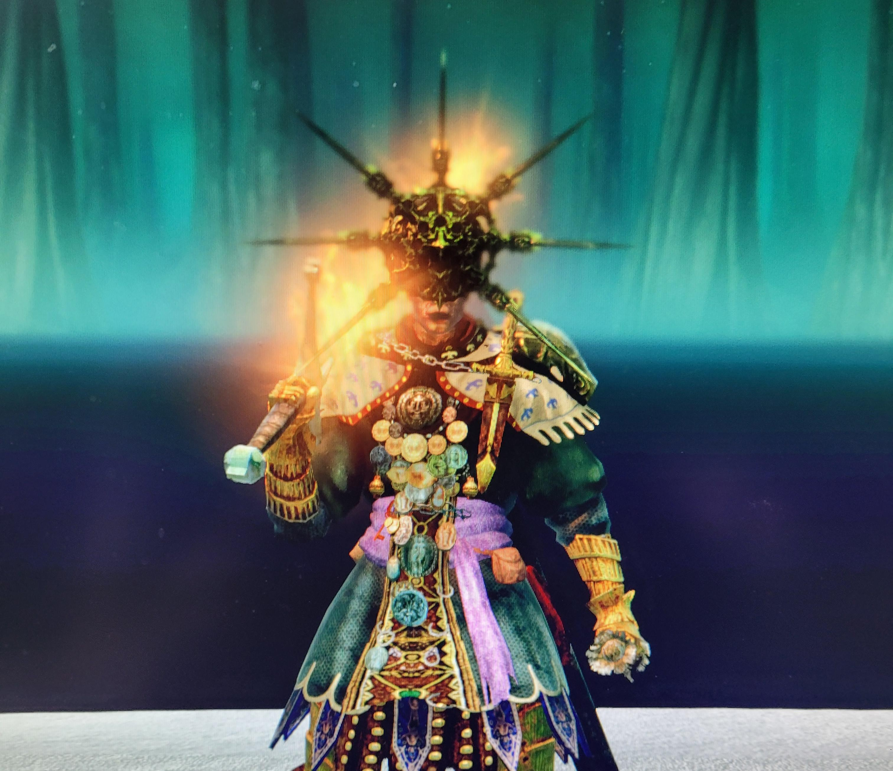
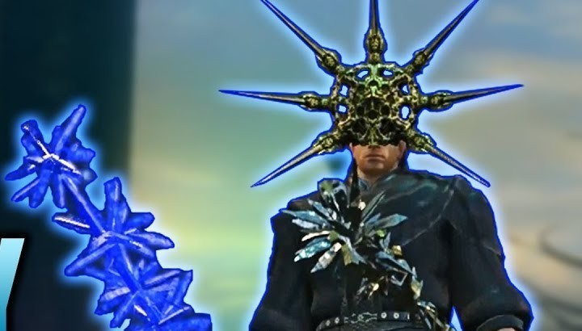
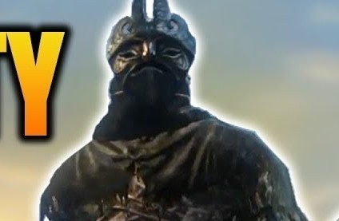

Montando sua Build
Escolher corretamente seus atributos, armas e magias é essencial para sobreviver aos desafios de Lordran. Cada build oferece vantagens, fraquezas e estilos únicos.
Descubra as melhores builds de Dark Souls, focadas em força, destreza, fé, magia e qualidade.

Escolher corretamente seus atributos, armas e magias é essencial para sobreviver aos desafios de Lordran. Cada build oferece vantagens, fraquezas e estilos únicos.
Alto dano físico, armas pesadas e grande capacidade de stagger.

Zweihander, Great Club, Dragon Tooth e Black Knight Greataxe.
Velocidade, esquivas rápidas e ataques consecutivos.

Uchigatana, Balder Side Sword, Chaos Blade e Gold Tracer.
Milagres, buffs sagrados e regeneração.

Sunlight Spear, Wrath of the Gods, Great Heal e Lightning Blade.
Alto dano mágico e combate à distância.

Crystal Soul Spear, Homing Soulmass, Dark Bead e White Dragon Breath.
Equilíbrio entre força e destreza, permitindo grande variedade de armas.

Claymore, Halberd, Longsword e Black Knight Sword.